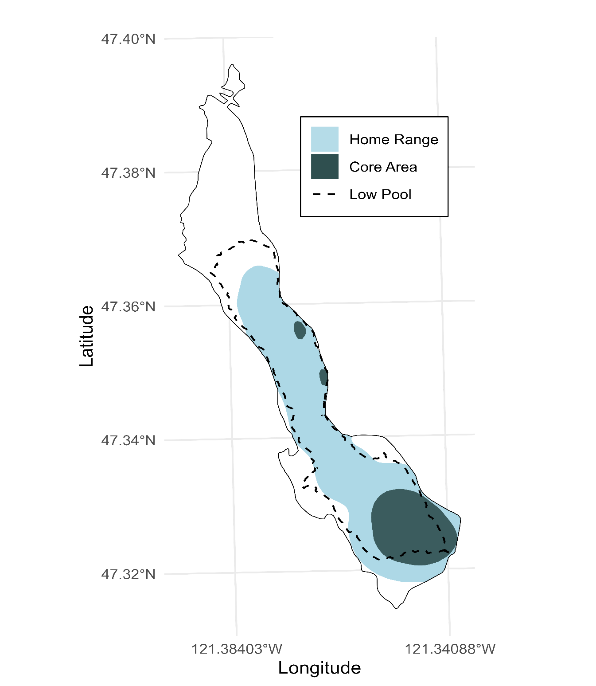
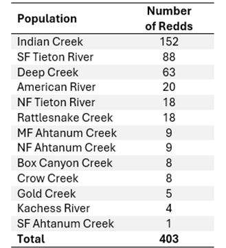
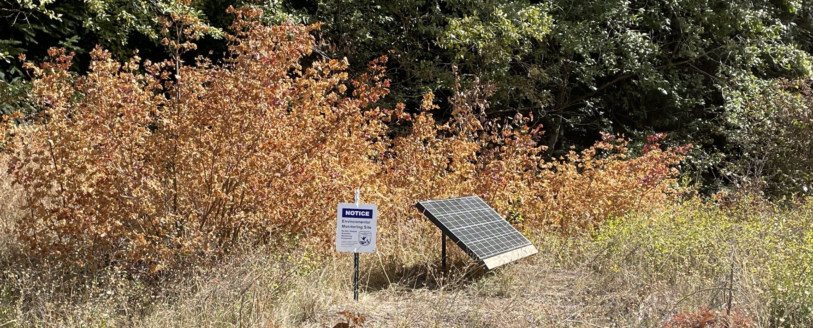

|
 |
Acoustic MonitoringBull Trout in Keechelus Reservoir In early December, we completed our final download of acoustic receivers in Keechelus Reservoir for 2024. Six months of data show Bull Trout concentrated near the dam. Light blue areas depict the home range, while dark blue areas highlight their core habitat. We are developing a Bayesian model to estimate survival and entrainment from these detections. Another download in spring will refine these probabilities and reveal any shifts in distribution. |
Steelhead ReturnMonitoring in Toppenish Creek Adult Steelhead are once again appearing in Toppenish Creek. Our PIT antennas at Toppenish National Wildlife Refuge first detected a returning fish on December 26, 2024. So far nine adults have been logged, most tagged throughout the Columbia River Basin in 2024. At this point last year we had documented only a single adult. These detections help us track straying fish in irrigation structures and guide actions to improve survival through the refuge. |
 |
Working with Partners2024 Summaries from the Bull Trout Working Group Partners across the Yakima Basin shared highlights from 2024. Yakama Nation Fisheries found little large woody debris and limited habitat complexity in the South Fork Tieton River. WDFW counted 403 Bull Trout redds basinwide, below the 20‑year average of 488, with most of the decline in the South Fork Tieton. Mid-Columbia Fisheries Enhancement Group reported that 44% of their eDNA samples from Waptus and Cooper rivers were positive for Brook Trout, while none detected Bull Trout. |
 |
New and Upcoming ReportsBull Trout Collection and Monitoring Reclamation recently submitted its 2024 Section 10 Recovery Permit report summarizing Bull Trout management across the Yakima Basin, including rescue, reconditioning, and trap‑and‑haul efforts. Findings show Bull Trout lingering later in the year at Bumping Dam, frequent use of areas near Keechelus Dam, and increased entrainment there when reservoir levels are low. Additional summaries of trap‑and‑haul work at Clear Creek Dam were provided directly to WDFW and NOAA. The 2023 Trap and Haul Report is nearly finished and will detail entrainment pathways, transport timing, and detections of Kachess River fish in Box Canyon Creek. Work on the 2024 report is underway and a draft is expected next summer. The Yakima Basin Bull Trout Working Group is also updating the Yakima Bull Trout Action Plan. When finalized, it will be available on the Yakima Basin Fish and Wildlife Recovery Board’s Yakipedia page. |
 |
KRD Antenna ShutdownsAntennas Off for the Winter PIT antennas in Big, Little, and Tucker creeks were shut down December 4. The Taneum Creek site remains active. Kittitas Reclamation District diverts canal water to these streams to bolster flows for fish, and our monitoring assesses how many benefit. In 2024 the KRD sites logged 768 individual fish—including 512 O. mykiss, 246 Coho, and 10 Chinook. |